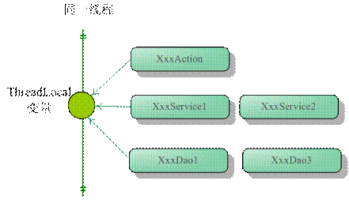

Runnable接口的run方法是要运行的逻辑。
Thread类实现run方法。方法里是执行的逻辑。start()方法表示启动新线程。
线程的成员方法setPriority。如设置当前线程的优先级为普通：
Thread.currentThread.setPriority(Thread.NORNAL_PRIORITY)
可用优先级：
分为“普通线程”和“守护线程”，区别是如果还有普通线程没有执行完毕，JVM是关不掉的。
普通线程创建的线程默认都是普通线程，除非用setDaemon(true)指定：
Thread t1 = new Thread(runnable); t1.setDaemon(true); t1.start();
暂停线程：Thread.sleep()
让出CPU：Thread.yield()
给其他线程执行的机会，如：循环处理多个记录的时候每个循环里yield一下，或阻塞
在IO时yield一下。
等待其他线程完毕：t1.join()
当前的线程停下，等这个t1的线程执行完了以后再执行当前线程。
对一个线程发出停止信号，如：t1.interrupted()要求线程t1停止。
这样t1的执行就会抛出InterruptedException异常，它是受检查异常，表示当前线程
被其他线程打断。如下面的代码收到异常后就break了，那么线程就中断了：
class T1 extends Thread {
while(true) {
try {
/* do something */
} catch (InterruptedException e) {
break;
}
}
}
如果去掉上面的break那线程就中断不了了。
执行线程并中断的过程如下：
T1 t1 = new T1(); t1.start(); t1.join(); t1.interrupt();
每个对象都有wait与notify和notifyAll方法，选一个对象作为标志来同步：
＊ 以对象o为标志，当前线程停止，让给其他线程执行：
synchronized { o.wait(); } //当前线程停止，等待唤醒。
这样当前线程就不会再醒过来，除非其他线程里调用对象o的nodify或是nodifyAll
方法：
synchronized { o.notifyAll(); } // 唤醒所有以o为标志等待的线程
忙等待没有对运行等待线程的CPU进行有效的利用，除非平均等待时间非常短。否则， 让等待线程进入睡眠或者非运行状态更为明智，直到它接收到它等待的信号。
Java有一个内建的等待机制来允许线程在等待信号的时候变为非运行状态。
java.lang.Object类定义了三个方法，wait()、notify()和notifyAll()来实现
这个等待机制。
一个线程一旦调用了任意对象的wait()方法，就会变为非运行状态，直到另一个线程调用
了同一个对象的notify()方法。为了调用wait()或者notify()，线程必须先获得
那个对象的锁。也就是说，线程必须在同步块里调用wait()或者notify()。以下是
MySingal的修改版本——使用了wait()和notify()的MyWaitNotify：
public class MonitorObject{ }
public class MyWaitNotify{
MonitorObject myMonitorObject = new MonitorObject();
public void doWait(){
synchronized(myMonitorObject){
try{
myMonitorObject.wait();
} catch(InterruptedException e){...}
}
}
public void doNotify(){
synchronized(myMonitorObject){
myMonitorObject.notify();
}
}
}
等待线程将调用doWait()，而唤醒线程将调用doNotify()。当一个线程调用一个对象的
notify()方法，正在等待该对象的所有线程中将有一个线程被唤醒并允许执行（校注：
这个将被唤醒的线程是随机的，不可以指定唤醒哪个线程）。同时也提供了一个
notifyAll()方法来唤醒正在等待一个给定对象的所有线程。
如你所见，不管是等待线程还是唤醒线程都在同步块里调用wait()和notify()。这是
强制性的！一个线程如果没有持有对象锁，将不能调用wait()，notify()或者
notifyAll()。否则，会抛出IllegalMonitorStateException异常。
（校注：JVM是这么实现的，当你调用wait时候它首先要检查下当前线程是否是锁的拥有者 ，不是则抛出IllegalMonitorStateExcept，参考JVM源码的 1422行。）
但是，这怎么可能？等待线程在同步块里面执行的时候，不是一直持有监视器对象（
myMonitor对象）的锁吗？等待线程不能阻塞唤醒线程进入doNotify()的同步块吗？
答案是：的确不能。一旦线程调用了wait()方法，它就释放了所持有的监视器对象上的锁
。这将允许其他线程也可以调用wait()或者notify()。
一旦一个线程被唤醒，不能立刻就退出wait()的方法调用，直到调用notify()的线程
退出了它自己的同步块。换句话说：被唤醒的线程必须重新获得监视器对象的锁，才可以
退出wait()的方法调用，因为wait方法调用运行在同步块里面。如果多个线程被
notifyAll()唤醒，那么在同一时刻将只有一个线程可以退出wait()方法，因为每个
线程在退出wait()前必须获得监视器对象的锁。
notify()和notifyAll()方法不会保存调用它们的方法，因为当这两个方法被调用时，有 可能没有线程处于等待状态。通知信号过后便丢弃了。因此，如果一个线程先于被通知线程 调用wait()前调用了notify()，等待的线程将错过这个信号。这可能是也可能不是个问题。 不过，在某些情况下，这可能使等待线程永远在等待，不再醒来，因为线程错过了唤醒信号 。
为了避免丢失信号，必须把它们保存在信号类里。在MyWaitNotify的例子中，通知信号 应被存储在MyWaitNotify实例的一个成员变量里。以下是MyWaitNotify的修改版本：
public class MyWaitNotify2{
MonitorObject myMonitorObject = new MonitorObject();
boolean wasSignalled = false;
public void doWait(){
synchronized(myMonitorObject){
if(!wasSignalled){
try{
myMonitorObject.wait();
} catch(InterruptedException e){...}
}
//clear signal and continue running.
wasSignalled = false;
}
}
public void doNotify(){
synchronized(myMonitorObject){
wasSignalled = true;
myMonitorObject.notify();
}
}
}
留意doNotify()方法在调用notify()前把wasSignalled变量设为true。同时，留意 doWait()方法在调用wait()前会检查wasSignalled变量。事实上，如果没有信号在前一次 doWait()调用和这次doWait()调用之间的时间段里被接收到，它将只调用wait()。
（校注：为了避免信号丢失， 用一个变量来保存是否被通知过。在notify前，设置自己 已经被通知过。在wait后，设置自己没有被通知过，需要等待通知。）
由于莫名其妙的原因，线程有可能在没有调用过notify()和notifyAll()的情况下醒来。 这就是所谓的假唤醒（spurious wakeups）。无端端地醒过来了。
如果在MyWaitNotify2的doWait()方法里发生了假唤醒，等待线程即使没有收到正确的信号 ，也能够执行后续的操作。这可能导致你的应用程序出现严重问题。
为了防止假唤醒，保存信号的成员变量将在一个while循环里接受检查，而不是在if表达式 里。这样的一个while循环叫做自旋锁（校注：这种做法要慎重，目前的JVM实现自旋会消耗 CPU，如果长时间不调用doNotify方法，doWait方法会一直自旋，CPU会消耗太大）。被唤醒 的线程会自旋直到自旋锁(while循环)里的条件变为false。以下MyWaitNotify2的修改版本 展示了这点：
public class MyWaitNotify3{
MonitorObject myMonitorObject = new MonitorObject();
boolean wasSignalled = false;
public void doWait(){
synchronized(myMonitorObject){
while(!wasSignalled){
try{
myMonitorObject.wait();
} catch(InterruptedException e){...}
}
//clear signal and continue running.
wasSignalled = false;
}
}
public void doNotify(){
synchronized(myMonitorObject){
wasSignalled = true;
myMonitorObject.notify();
}
}
}
留意wait()方法是在while循环里，而不在if表达式里。如果等待线程没有收到信号就唤醒 ，wasSignalled变量将变为false,while循环会再执行一次，促使醒来的线程回到等待状态 。
如果你有多个线程在等待，被notifyAll()唤醒，但只有一个被允许继续执行，使用while 循环也是个好方法。每次只有一个线程可以获得监视器对象锁，意味着只有一个线程可以 退出wait()调用并清除wasSignalled标志（设为false）。一旦这个线程退出doWait()的 同步块，其他线程退出wait()调用，并在while循环里检查wasSignalled变量值。但是， 这个标志已经被第一个唤醒的线程清除了，所以其余醒来的线程将回到等待状态，直到下次 信号到来。
（校注：本章说的字符串常量指的是值为常量的变量）
本文早期的一个版本在MyWaitNotify例子里使用字符串常量（""）作为管程对象。以下是
那个例子：
public class MyWaitNotify{
String myMonitorObject = "";
boolean wasSignalled = false;
public void doWait(){
synchronized(myMonitorObject){
while(!wasSignalled){
try{
myMonitorObject.wait();
} catch(InterruptedException e){...}
}
//clear signal and continue running.
wasSignalled = false;
}
}
public void doNotify(){
synchronized(myMonitorObject){
wasSignalled = true;
myMonitorObject.notify();
}
}
}
在空字符串作为锁的同步块(或者其他常量字符串)里调用wait()和notify()产生的问题是， JVM/编译器内部会把常量字符串转换成同一个对象。这意味着，即使你有2个不同的 MyWaitNotify实例，它们都引用了相同的空字符串实例。同时也意味着存在这样的风险：
在第一个MyWaitNotify实例上调用doWait()的线程会被在第二个MyWaitNotify实例上调用 doNotify()的线程唤醒。这种情况可以画成以下这张图：
String
/ \
MyWaitNotify1 MyWaitNotify2
/ \ / \
Thread-A Thread-B Thread-C Thread-D
起初这可能不像个大问题。毕竟，如果doNotify()在第二个MyWaitNotify实例上被调用， 真正发生的事不外乎线程A和B被错误的唤醒了 。这个被唤醒的线程（A或者B）将在while 循环里检查信号值，然后回到等待状态，因为doNotify()并没有在第一个MyWaitNotify实例 上调用，而这个正是它要等待的实例。这种情况相当于引发了一次假唤醒。线程A或者B在 信号值没有更新的情况下唤醒。但是代码处理了这种情况，所以线程回到了等待状态。记住 ，即使4个线程在相同的共享字符串实例上调用wait()和notify()，doWait()和doNotify() 里的信号还会被2个MyWaitNotify实例分别保存。在MyWaitNotify1上的一次doNotify() 调用可能唤醒MyWaitNotify2的线程，但是信号值只会保存在MyWaitNotify1里。
问题在于，由于doNotify()仅调用了notify()而不是notifyAll()，即使有4个线程在相同的 字符串（空字符串）实例上等待，只能有一个线程被唤醒。所以，如果线程A或B被发给C或 D的信号唤醒，它会检查自己的信号值，看看有没有信号被接收到，然后回到等待状态。而 C和D都没被唤醒来检查它们实际上接收到的信号值，这样信号便丢失了。这种情况相当于 前面所说的丢失信号的问题。C和D被发送过信号，只是都不能对信号作出回应。
如果doNotify()方法调用notifyAll()，而非notify()，所有等待线程都会被唤醒并依次 检查信号值。线程A和B将回到等待状态，但是C或D只有一个线程注意到信号，并退出 doWait()方法调用。C或D中的另一个将回到等待状态，因为获得信号的线程在退出doWait() 的过程中清除了信号值(置为false)。
看过上面这段后，你可能会设法使用notifyAll()来代替notify()，但是这在性能上是个 坏主意。在只有一个线程能对信号进行响应的情况下，没有理由每次都去唤醒所有线程。
所以：在wait()/notify()机制中，不要使用全局对象，字符串常量等。应该使用对应唯一 的对象。例如，每一个MyWaitNotify3的实例（前一节的例子）拥有一个属于自己的监视器 对象，而不是在空字符串上调用wait()/notify()。
注：管程 (英语：Monitors，也称为监视器) 是对多个工作线程实现互斥访问共享资源的 对象或模块。这些共享资源一般是硬件设备或一群变量。管程实现了在一个时间点，最多 只有一个线程在执行它的某个子程序。与那些通过修改数据结构实现互斥访问的并发程序 设计相比，管程很大程度上简化了程序设计。
ThreadLocal类给每个线程都准备一个资源的副本。保证每个资源只有当前线程可以
访问。
ThreadLocal对象不能简单地赋值就完了。因为它管理的每个线程的内容都要初始化，
所以它每次都会调用自己的initialValue()方法。重写这个方法可以完成每个线程的
初始化。
private static ThreadLocal<List<String>> threadLod =
new ThreadLocal<List<String>>() {
protected List<String> initialValue() {
return new ArrayList<String>();
}
}
从线程的角度看，目标变量就象是线程的本地变量，这也是类名中Local所要表达的意思。
线程局部变量并不是Java的新发明，很多语言（如IBM IBM XL FORTRAN）在语法层面就提供
线程局部变量。在Java中没有提供在语言级支持，而是变相地通过ThreadLocal的类提供
支持。
所以，在Java中编写线程局部变量的代码相对来说要笨拙一些，因此造成线程局部变量没有 在Java开发者中得到很好的普及。
ThreadLocal类接口很简单，只有4个方法，我们先来了解一下：
void set(Object value)设置当前线程的线程局部变量的值。
public Object get()该方法返回当前线程所对应的线程局部变量。
public void remove()JDK 5.0新增。线程结束后本来就会自动回收，显式调用并不是必要的。
protected Object initialValue()返回初始值，显然是为了让子类覆盖而设计的。
initialValue()是一个延迟调用方法，在线程第1次调用get()或set(Object)时才
执行，并且仅执行1次。ThreadLocal中的缺省实现直接返回一个null。
值得一提的是，在JDK5.0中，ThreadLocal已经支持泛型变为ThreadLocal<T>。API方法
也相应进行了调整，新版本的API方法分别是void set(T value)、T get()以及
T initialValue()。
ThreadLocal是如何做到为每一个线程维护变量的副本的呢？其实实现的思路很简单：
在ThreadLocal类中有一个Map，用于存储每一个线程的变量副本，Map中元素的键为线程
对象，而值对应线程的变量副本。我们自己就可以提供一个简单的实现版本：
public class SimpleThreadLocal {
private Map valueMap = Collections.synchronizedMap(new HashMap());
public void set(Object newValue) {
// 键为线程对象，值为本线程的变量副本
valueMap.put(Thread.currentThread(), newValue);
}
public Object get() {
Thread currentThread = Thread.currentThread();
//返回本线程对应的变量
Object o = valueMap.get(currentThread);
if (o == null && !valueMap.containsKey(currentThread)) {
// 如果在Map中不存在，放到Map中保存起来。
o = initialValue();
valueMap.put(currentThread, o);
}
return o;
}
public void remove() {
valueMap.remove(Thread.currentThread());
}
public Object initialValue() {
return null;
}
}
虽然这个ThreadLocal实现版本显得比较幼稚，但它和JDK所提供的ThreadLocal类在
实现思路上是相近的。
下面，我们通过一个具体的实例了解一下ThreadLocal的具体使用方法。
package com.baobaotao.basic;
public class SequenceNumber {
// 通过匿名内部类覆盖ThreadLocal的initialValue()方法，指定初始值
private static ThreadLocal seqNum = new ThreadLocal() {
public Integer initialValue() {
return 0;
}
};
// 获取下一个序列值
public int getNextNum(){
seqNum.set(seqNum.get()+1);
return seqNum.get();
}
public static void main(String[] args) {
SequenceNumber sn = new SequenceNumber();
// 3个线程共享sn，各自产生序列号
TestClient t1 = new TestClient(sn);
TestClient t2 = new TestClient(sn);
TestClient t3 = new TestClient(sn);
t1.start();
t2.start();
t3.start();
}
private static class TestClient extends Thread {
private SequenceNumber sn;
public TestClient(SequenceNumber sn) {
this.sn = sn;
}
public void run() {
// 每个线程打出3个序列值
for (int i = 0; i < 3; i++) {
System.out.println("thread[" + Thread.currentThread().getName()
+ "] sn[" + sn.getNextNum() + "]");
}
}
}
}
通常我们通过匿名内部类的方式定义ThreadLocal的子类，提供初始的变量值。
TestClient线程产生一组序列号，生成3个TestClient，它们共享同一个
SequenceNumber实例。运行以上代码，在控制台上输出以下的结果：
thread[Thread-2] sn[1] thread[Thread-0] sn[1] thread[Thread-1] sn[1] thread[Thread-2] sn[2] thread[Thread-0] sn[2] thread[Thread-1] sn[2] thread[Thread-2] sn[3] thread[Thread-0] sn[3] thread[Thread-1] sn[3]
考察输出的结果信息，我们发现每个线程所产生的序号虽然都共享同一个SequenceNumber
实例，但它们并没有发生相互干扰的情况，而是各自产生独立的序列号，这是因为我们通过
ThreadLocal为每一个线程提供了单独的副本。
ThreadLocal和线程同步机制相比有什么优势呢？ThreadLocal和线程同步机制都是为了
解决多线程中相同变量的访问冲突问题。
在同步机制中，通过对象的锁机制保证同一时间只有一个线程访问变量。这时该变量是多个 线程共享的，使用同步机制要求程序慎密地分析什么时候对变量进行读写，什么时候需要 锁定某个对象，什么时候释放对象锁等繁杂的问题，程序设计和编写难度相对较大。
而ThreadLocal则从另一个角度来解决多线程的并发访问。ThreadLocal会为每一个线程
提供一个独立的变量副本，从而隔离了多个线程对数据的访问冲突。因为每一个线程都拥有
自己的变量副本，从而也就没有必要对该变量进行同步了。ThreadLocal提供了线程安全
的共享对象，在编写多线程代码时，可以把不安全的变量封装进ThreadLocal。
由于ThreadLocal中可以持有任何类型的对象，低版本JDK所提供的get()返回的是
Object对象，需要强制类型转换。但JDK 5.0通过泛型很好的解决了这个问题，在一定
程度地简化ThreadLocal的使用。
概括起来说，对于多线程资源共享的问题，同步机制采用了“以时间换空间”的方式，而
ThreadLocal采用了“以空间换时间”的方式。前者仅提供一份变量，让不同的线程排队
访问，而后者为每一个线程都提供了一份变量，因此可以同时访问而互不影响。
我们知道在一般情况下，只有无状态的Bean才可以在多线程环境下共享，在Spring中，
绝大部分Bean都可以声明为singleton作用域。就是因为Spring对一些Bean（如
RequestContextHolder、TransactionSynchronizationManager、
LocaleContextHolder等）中非线程安全状态采用ThreadLocal进行处理，让它们也成为
线程安全的状态，因为有状态的Bean就可以在多线程中共享了。
一般的Web应用划分为展现层、服务层和持久层三个层次，在不同的层中编写对应的逻辑， 下层通过接口向上层开放功能调用。在一般情况下，从接收请求到返回响应所经过的所有 程序调用都同属于一个线程，如图所示：

这样你就可以根据需要，将一些非线程安全的变量以ThreadLocal存放，在同一次请求
响应的调用线程中，所有关联的对象引用到的都是同一个变量。
下面的实例能够体现Spring对有状态Bean的改造思路：
非线程安全：
public class TopicDao {
//一个非线程安全的变量
private Connection conn;
public void addTopic(){
//引用非线程安全变量
Statement stat = conn.createStatement();
// ...
}
}
由于conn是成员变量，因为addTopic()方法是非线程安全的，必须在使用时创建一个新
TopicDao实例（非singleton）。下面使用ThreadLocal对conn这个非线程安全的
“状态”进行改造：
线程安全：
import java.sql.Connection;
import java.sql.Statement;
public class TopicDao {
// 使用ThreadLocal保存Connection变量
private static ThreadLocal connThreadLocal = new ThreadLocal();
public static Connection getConnection() {
// 如果connThreadLocal没有本线程对应的Connection
// 创建一个新的Connection，并将其保存到线程本地变量中。
if (connThreadLocal.get() == null) {
Connection conn = ConnectionManager.getConnection();
connThreadLocal.set(conn);
return conn;
}else{
return connThreadLocal.get();//③直接返回线程本地变量
}
}
public void addTopic() {
// 从ThreadLocal中获取线程对应的Connection
Statement stat = getConnection().createStatement();
}
}
不同的线程在使用TopicDao时，先判断connThreadLocal.get()是否是null，如果是
null，则说明当前线程还没有对应的Connection对象，这时创建一个Connection对象
并添加到本地线程变量中；如果不为null，则说明当前的线程已经拥有了Connection
对象，直接使用就可以了。这样，就保证了不同的线程使用线程相关的Connection，而
不会使用其它线程的Connection。因此，这个TopicDao就可以做到singleton共享了。
当然，这个例子本身很粗糙，将Connection的ThreadLocal直接放在DAO只能做到本DAO
的多个方法共享Connection时不发生线程安全问题，但无法和其它DAO共用同一个
Connection，要做到同一事务多DAO共享同一Connection，必须在一个共同的外部类
使用ThreadLocal保存Connection。
ThreadLocal是解决线程安全问题一个很好的思路，它通过为每个线程提供一个独立的
变量副本解决了变量并发访问的冲突问题。在很多情况下，ThreadLocal比直接使用
synchronized同步机制解决线程安全问题更简单，更方便，且结果程序拥有更高的并发性
。
synchronized针对一个对象加锁，如果修饰类静态方法，那锁来自于所在的类Class
对象。
代码执行到synchronized同步块里时会取得锁，而离开时（无论是正常离开还是异常）
都会放开锁。
注意内置锁的粒度是“线程”而不是“调用”。一个线程取得了锁，其他线程都不能再 取得锁。但是本线程还是可以在不同的锁代码块中执行，因为锁的粒度是线程而不是 代码块或线程。这就叫“重入”。
例如：父类的方法是synchronized的。子类重写了这个方法，并在方法中调用了父类：
public class Widget {
public synchronized void doSomething() {
//...
}
}
public class LogginWidget extends Widget {
public synchronized void doSomething() {
//...
super.doSomething();
//...
}
}
上面的代码中，如果锁的粒度是方法调用，那线程就锁死了。但因为粒度是线程，所以可以 顺利执行。
只有两个线程竞争时有用，对象头Mark World与线程栈相互指向来简单标记锁状态。
超过两个线程竞争时转为互斥锁。
消除在没有竞争状态下的同步原语，连CAS都省了。